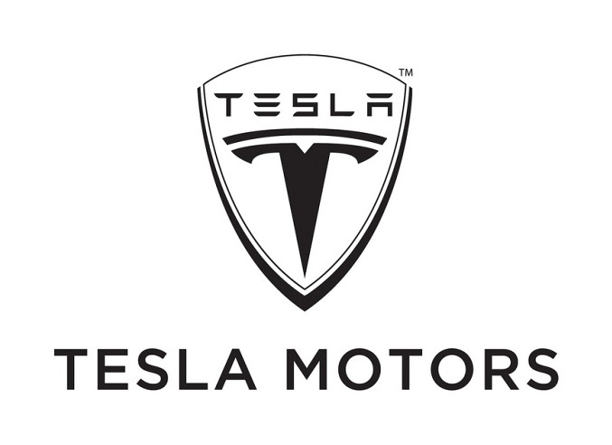

2003: Tesla Motors founded by Martin Eberhard and Marc Tarpenning

Tesla was incorporated in July 2003 by Martin Eberhard and Marc Tarpenning as Tesla Motors. The
company's name is a tribute to inventor and electrical engineer Nikola Tesla. In February 2004, via a
$6.5 million investment, Elon Musk became the company's largest shareholder. He became CEO in 2008.
Tesla's announced mission is to create products which help “accelerate the world's transition to
sustainable energy.”
2004: Elon Musk becomes Chairman of Tesla's board of directors and leads the
company's initial round of investment funding.
2008: Tesla unveils the Tesla Roadster, the world's first all-electric sports car.
2010: Tesla becomes a publicly traded company with its initial public offering
(IPO).
2012: Tesla launches the Model S, a luxury all-electric sedan that gains
widespread acclaim.
2014: Tesla announces plans to build the Gigafactory, a massive battery
manufacturing facility, to support the production of electric vehicles and energy storage solutions.
2015: The Model X, an all-electric SUV with distinctive falcon-wing doors, is
introduced.
2016: Tesla announces its Autopilot system, which enables semi-autonomous driving
capabilities in its vehicles.
2017: The Tesla Model 3, a more affordable electric sedan, enters production, with
a high number of pre-orders and significant public interest.
2018: Tesla surpasses General Motors to become the most valuable U.S. automaker in
terms of market capitalization.
2020: Tesla becomes the most valuable automaker in the world, surpassing Toyota's
market capitalization.
2020: Tesla announces plans for a 5-for-1 stock split, making shares more
accessible to a broader range of investors.
2021: Tesla continues to expand its product lineup with announcements of the
Cybertruck (all-electric pickup truck) and the Tesla Semi (all-electric commercial truck).
2021: Tesla starts accepting Bitcoin as payment for its vehicles, though this
policy is later revised.
2021: Tesla's Full Self-Driving (FSD) Beta version is released to a limited number
of customers, showcasing advanced autonomous driving capabilities.
2021: Tesla's market capitalization reaches new heights, solidifying its position
as one of the world's most valuable companies.